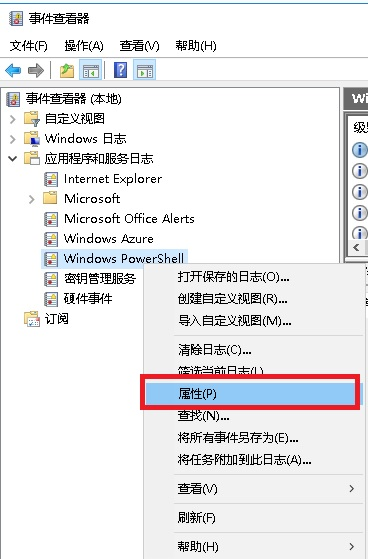
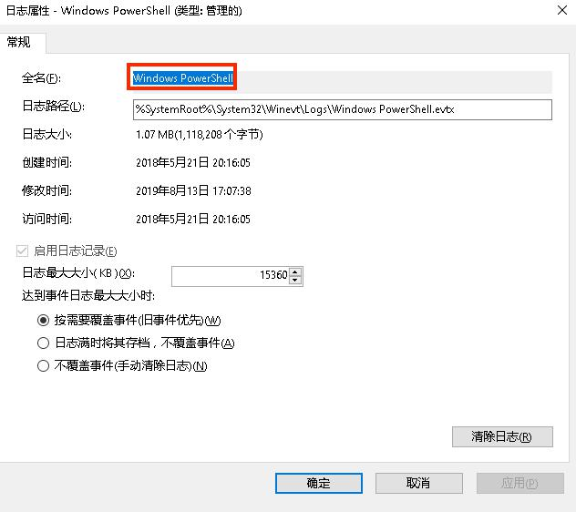
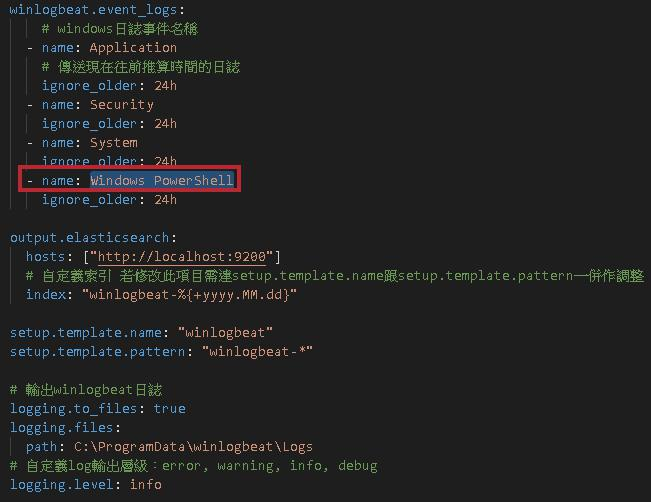

- elastic的其中之一產品Winlogbeat下載可以協助windows主機撈取EventLog
- 目前可將撈取的Log送往logstash跟elasticsearch兩種選擇
跟filebeat一樣會有個config叫做winlogbeat
1
2
3
4
5
6
7
8
9
10
11
12
13
14
15
16
17
18
19
20
21
22
23
24
25winlogbeat.event_logs:
# windows日誌事件名稱
- name: Application
# 傳送現在往前推算時間的日誌
ignore_older: 24h
- name: Security
ignore_older: 24h
- name: System
ignore_older: 24h
output.elasticsearch:
# docker自架elasticsearch並對外暴露9200 port
hosts: ["http://localhost:9200"]
# 自定義索引 若修改此項目需連setup.template.name跟setup.template.pattern一併作調整
index: "winlogbeat-%{+yyyy.MM.dd}"
setup.template.name: "winlogbeat"
setup.template.pattern: "winlogbeat-*"
# 輸出winlogbeat日誌
logging.to_files: true
logging.files:
path: C:\ProgramData\winlogbeat\Logs
# 自定義log輸出層級：error, warning, info, debug
logging.level: info輸出特定服務名稱
- 以powershell為例
 - 取完整服務名稱
 - config設定特定輸出服務名稱

- 以powershell為例
修改config後記得做test config
1
${path}\winlogbeat.exe test config -c ${path}\winlogbeat.yml -e
設定完後再將winlogbeat加入服務並啟動
1
2
3
4//// 加入winlogbeat服務
${path}\install-service-winlogbeat.ps1
//// 啟動winlogbeat服務
Start-Service winlogbeat